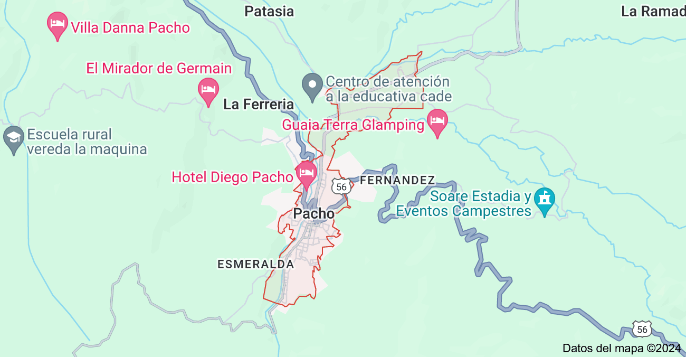
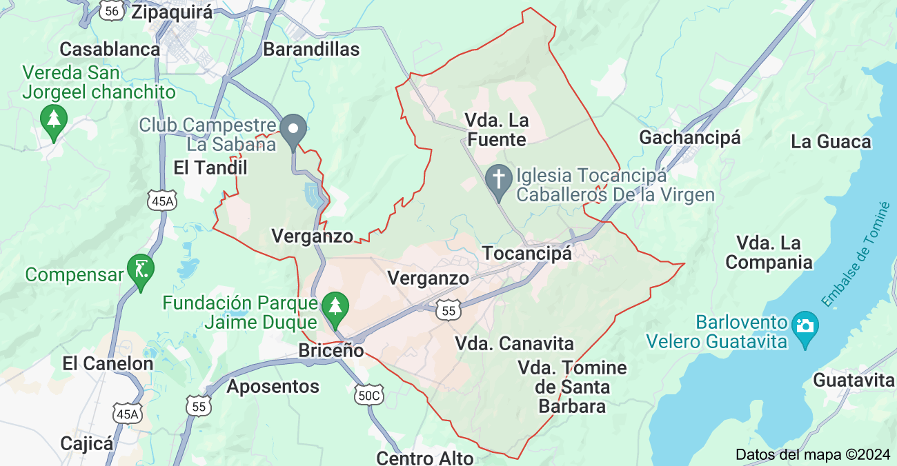

Bienvenido a la página oficial de Pacho y Tocancipa, un encantador municipio de Cundinamarca.
Orígenes y Fundación Época Precolombina: Antes de la llegada de los españoles, la región donde hoy se encuentra Pacho estaba habitada por comunidades indígenas de la etnia muisca, quienes formaban parte de la Confederación de los Muiscas. Estos pueblos eran conocidos por su avanzada organización social y su sistema agrícola. Conquista Española: En el siglo XVI, con la llegada de los conquistadores españoles a la región, los indígenas muiscas se enfrentaron a un proceso de colonización que llevó a la creación de nuevos asentamientos y la reestructuración de sus territorios. Fundación del Municipio: Pacho fue oficialmente fundado el 23 de marzo de 1537 por el conquistador Sebastián de Belalcázar. La fundación se realizó en el contexto de la expansión española en el Nuevo Mundo y la consolidación de su dominio en el altiplano cundiboyacense. Desarrollo Colonial Economía: Durante la época colonial, Pacho se estableció como un importante centro de producción agrícola en la región. La tierra fértil permitió el cultivo de diversos productos, incluyendo caña de azúcar, café y maíz. Sociedad y Cultura: La influencia española introdujo nuevas costumbres, arquitectura y religiones. La iglesia católica jugó un papel central en la vida de la comunidad, con la construcción de varias iglesias y la implementación de festividades religiosas. Era Republicana Independencia: Con la independencia de Colombia en el siglo XIX, Pacho pasó a formar parte de la República de Colombia. La región experimentó cambios políticos y sociales significativos durante esta época. Economía y Desarrollo: A lo largo del siglo XIX y XX, Pacho continuó siendo un importante centro agrícola. La llegada de nuevas tecnologías y la expansión de las redes de transporte contribuyeron al desarrollo de la región. Modernización: En las últimas décadas, Pacho ha experimentado un crecimiento en infraestructura y servicios. Se ha trabajado en mejorar la calidad de vida de los habitantes y en preservar el patrimonio histórico y cultural del municipio. Cultura y Tradiciones Festividades: Pacho es conocido por sus festividades tradicionales, que incluyen eventos como la Fiesta de la Virgen del Carmen y el Festival del Retorno. Estas celebraciones reflejan la rica herencia cultural del municipio. Gastronomía: La gastronomía de Pacho, como en muchas otras regiones de Colombia, está marcada por platos típicos que reflejan la mezcla de influencias indígenas y coloniales. Arquitectura: El municipio cuenta con varias edificaciones históricas, como iglesias y casonas coloniales, que son testimonio de su pasado y contribuyen a su atractivo turístico. 
Orígenes y Fundación HISTORIA TOCANCIPA poca prehispánica - La región fue habitada por los muiscas, una tribu indígena que hizo parte de la Confederación Muisca. - Tocancipá fue un importante centro ceremonial y comercial. Conquista española (1537-1600) - Los españoles llegaron a la región en 1537, liderados por Gonzalo Jiménez de Quesada. - La población indígena fue reducida y sometida a la encomienda. Colonia (1600-1810) - Tocancipá se convirtió en un importante centro agrícola y ganadero. - La población creció y se establecieron haciendas y hatos. Independencia (1810-1821) - Tocancipá se unió a la lucha por la independencia de Colombia. - Los líderes locales apoyaron a Simón Bolívar. República (1821-1900) - Tocancipá se convirtió en un municipio de Cundinamarca. - La economía se basó en la agricultura y la ganadería. Siglo XX (1900-2000) - Tocancipá experimentó un crecimiento demográfico y económico. - Se establecieron industrias y servicios. Actualidad (2000-presente) - Tocancipá es un importante centro comercial y turístico. - La municipalidad ha implementado proyectos de desarrollo sostenible.
1. Fiesta de la Virgen del Carmen Fecha: 16 de julio Descripción: Esta festividad es una de las más importantes para la comunidad católica de Pacho. La Virgen del Carmen es la patrona de los conductores y de la localidad. Las celebraciones incluyen una misa solemne, procesiones y eventos comunitarios.